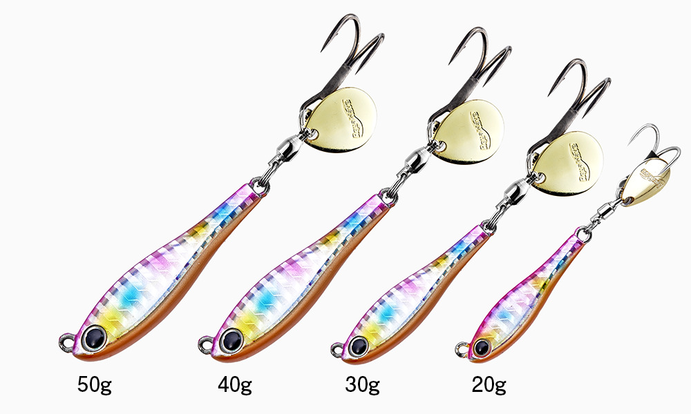
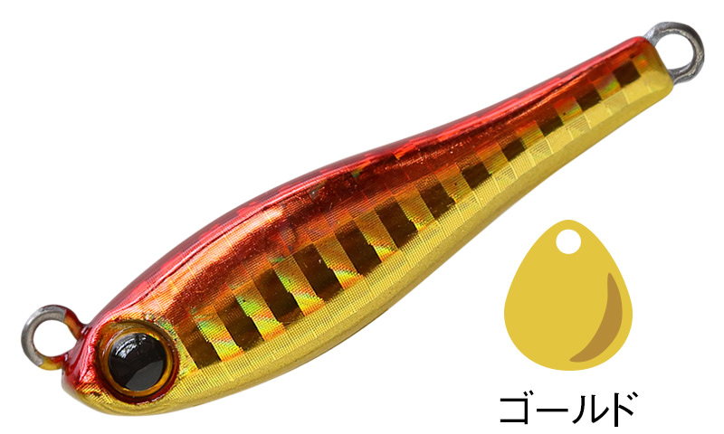
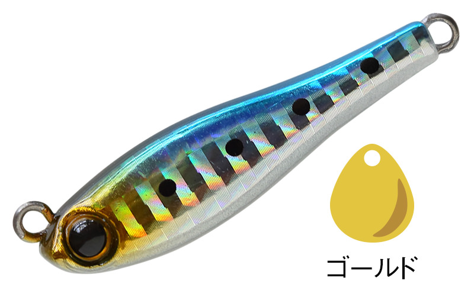
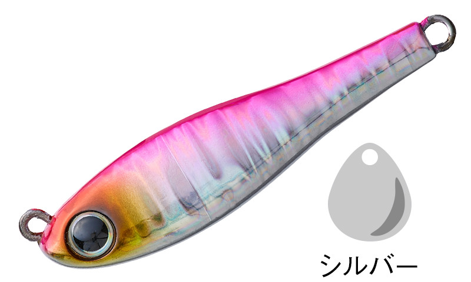
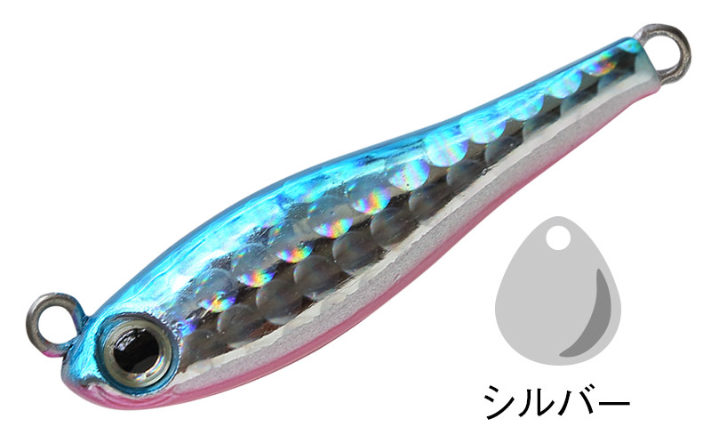

メタルマジック ショア
（MetalMagic Shore）
メタルマジック ショアは、アクアウェーブ（コーモラン）のテールスピンジグです。
タングステン製の「メタルマジックTG」に対して、こちらは鉛素材。TGより浮き上がりが早いので、オカッパリのシャローレンジを低速から超高速まで攻略できるのが最大の特徴です。投げて巻くだけで、テールの小型コロラドブレードが回って魚を誘います。

画像出典:Vivanet（アクアウェーブ）公式HP
スペック
- メーカー
- Aqua Wave（アクアウェーブ／コーモラン）
- タイプ
- テールスピンジグ（鉛製）
- ウエイト
- 20g／30g／40g／50g
- ブレード
- 20g：#0、30〜50g：#2（コロラドブレード）
- フック
- ダブルフック
- カラー
- 全22色（一般カラー13色＋船宿監修カラー9色）
- ターゲット
- 青物・サワラ・シーバスなど
- 価格
- 900〜1,100円（税別）
▼今すぐチェック

メタルマジック ショアの特徴
シャローレンジを徹底攻略。低速から超高速まで対応するオールマイティなテールスピンジグ
-
鉛素材で浮き上がりが早い
タングステンのTGに比べて浮き上がりが早く、根掛かりしやすい浅場や、足元までの距離が短いオカッパリで扱いやすい。
-
超高速巻きでも回らない超低重心
三角形の断面と超低重心の設計で、超高速で巻いてもボディが回転しない。フロントヘビーの形でボトムにも早く届く。
-
専用ブレードと強い接続パーツ
メタルマジック専用に設計したブレードで、引き抵抗の軽さとアピール力を両立。太めの平打ちスプリットリングとダブルフックで、パワーファイトでも安心。
20g・30g・40g・50gの4サイズ展開で、風や水深に合わせて選べます。

画像出典:Vivanet（アクアウェーブ）公式HP
メタルマジック ショアの使い方
キャストしたら、狙いたいレンジまで沈めてただ巻きするのが基本です。
低速から超高速までどの速さでも泳ぐので、まずは中速で巻き、反応がなければ速巻きに切り替えてスピードで食わせると効率よく探れます。鉛素材で浮き上がりやすいので、浅い場所では巻き始めを早めにして根掛かりを避けましょう。
メタルマジック ショアの得意な状況
堤防や河口、サーフなどのオカッパリで、浅いレンジを回遊する青物・サワラ・シーバスを狙う場面で出番です。
コンパクトなボディなので、小さなベイトを食べていてルアーを選ぶ魚にもよく釣れるのが強み。20gから50gまでそろうので、風や水深に合わせて重さを選べます。
ワンポイント
テールスピンジグは、ブレードが回る最低限のスピードを知っておくと使いやすくなります。足元で巻いてみて、ブレードが回り始める速さを手元の振動で覚えておくと、遠くでも「回っているか」を感じながら、ぎりぎりのスローで食わせられます。
サワラ狙いならワイヤーリーダーも
サワラ・サゴシの鋭い歯でリーダーごとジグを切られないように、ジグの前に30cm以内の短いワイヤーリーダーを付けておくと安心です。カッターが少ない日は外して、状況に合わせて使い分けましょう。くわしくはサワラのブレードジギング完全ガイドで紹介しています。

メタルマジック ショア・TG・スリムの違い
| モデル | 素材／ウエイト | 得意な場面 |
|---|---|---|
| メタルマジック ショア | 鉛／20〜50g | 浅いレンジや根の多い場所のオカッパリ。低速〜超高速まで（本記事のモデル） |
| メタルマジックTG | タングステン／20〜60g | 小さなシルエットで遠くへ飛ばしたい時。スレた魚やマイクロベイトに |
| メタルマジックスリム | 30〜60g | 細身のシルエットで、サワラなど細長いベイトを食べている魚に |
浅場や根の多い場所で気軽に使うならショア、飛距離とシルエットの小ささならTG、サワラ狙いならスリムと使い分けるのがおすすめです。
人気カラー
メタルマジック ショアの人気カラーを紹介します。

アカキン朝マズメや濁りの日に効く定番のアピールカラー。

イワシイワシを食べている時のナチュラルカラー。

ピンクバックピンクの背でよく目立つ。朝夕のマズメに。

ブルピンブルーとピンクで目立たせたい時の定番。
画像出典:Vivanet（アクアウェーブ）公式HP
▼今すぐチェック
メタルマジック ショアに似ているルアー
-
 メタルマジックTG
アクアウェーブ
詳細はこちら＞
メタルマジックTG
アクアウェーブ
詳細はこちら＞
同じシリーズのタングステン版。小さなシルエットで遠くを探りたい時に。
-
 メタルマジックスリム
アクアウェーブ
詳細はこちら＞
メタルマジックスリム
アクアウェーブ
詳細はこちら＞
同じシリーズの細身モデル。サワラなど細いベイトを食べている時に。
-
 ジャックアイマキマキ
ハヤブサ
詳細はこちら＞
ジャックアイマキマキ
ハヤブサ
詳細はこちら＞
巻くだけで釣れるブレードジグの定番。根掛かりの多い場所でも気軽に投げられる。